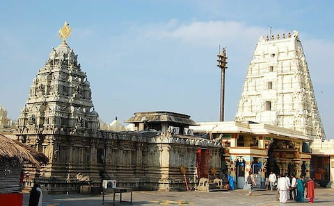
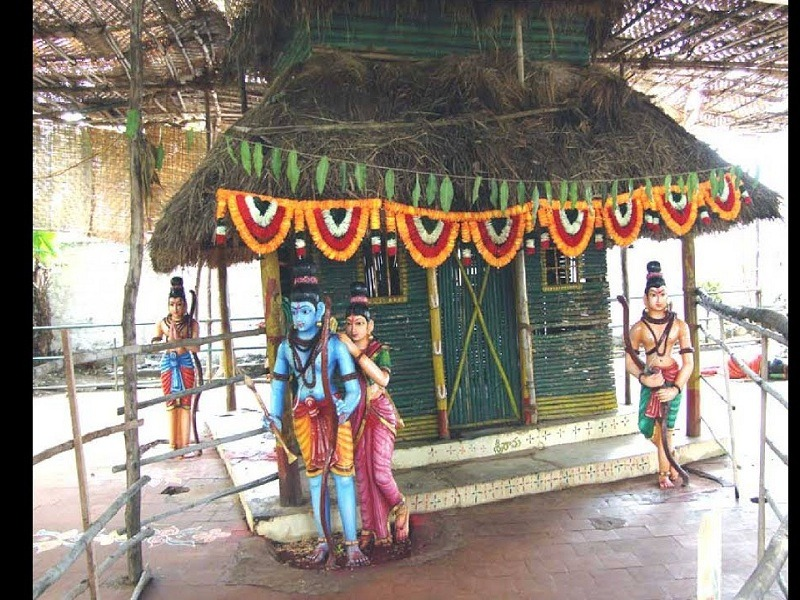
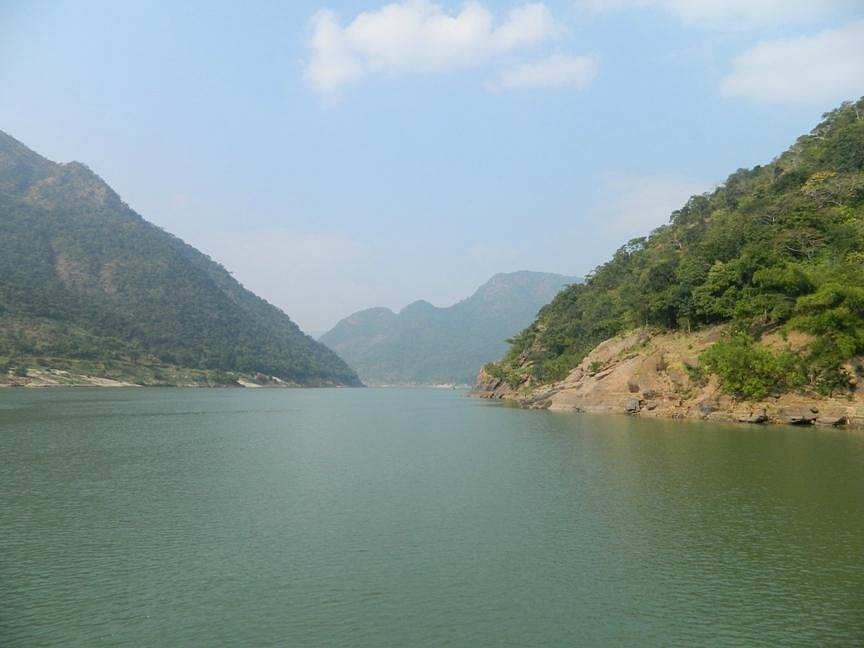
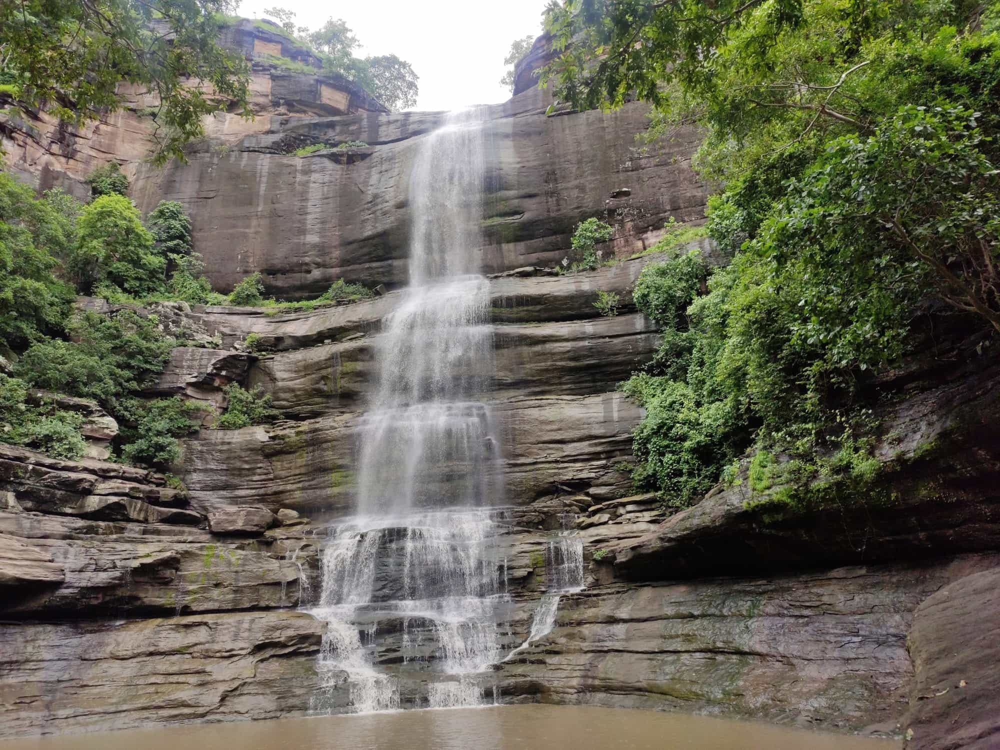

Bhadrachalam Temple
A sacred temple dedicated to Lord Rama, located along the banks of the Godavari River, known for its grand Sree Rama Navami celebrations.

Parnashala
This is a spiritual site believed to be a part of Lord Rama's exile. The serene surroundings make it an ideal location for meditation.

Papikondalu Hills
These hills offer breathtaking views of the Godavari River. A popular attraction is the boat ride through the serene surroundings of the hills.

Gundala Waterfalls
A hidden gem within the Kothagudem forests, this waterfall is surrounded by thick greenery, especially beautiful during the monsoon season.